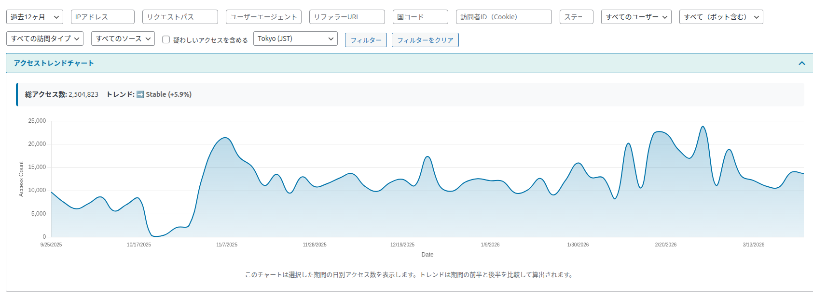
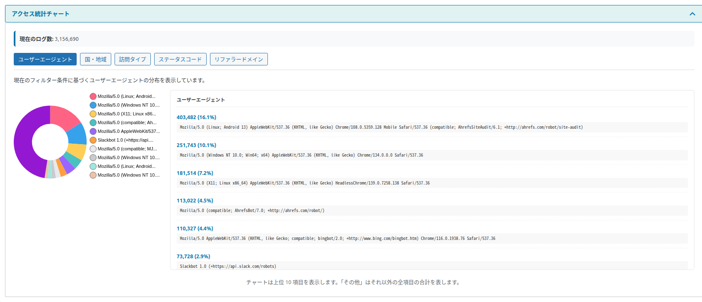
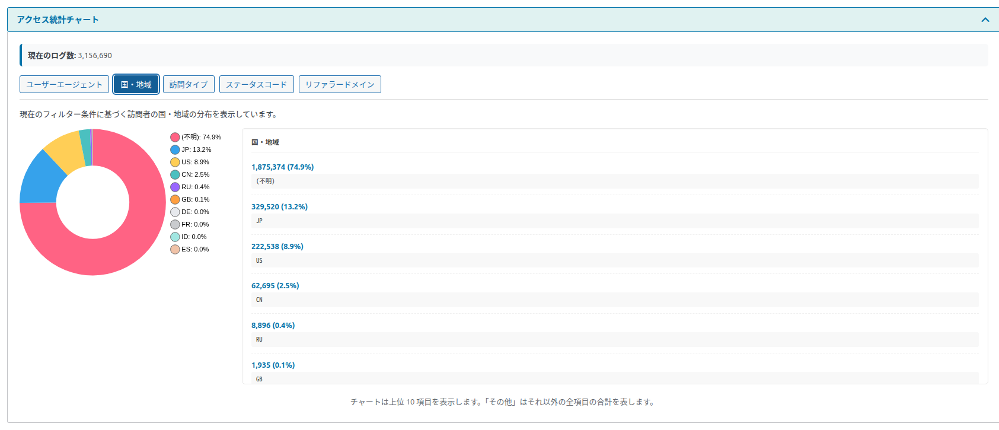
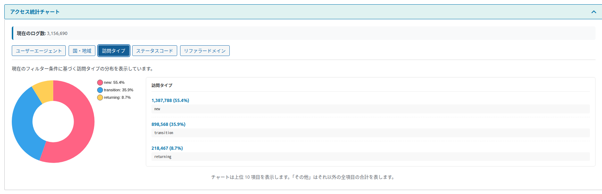
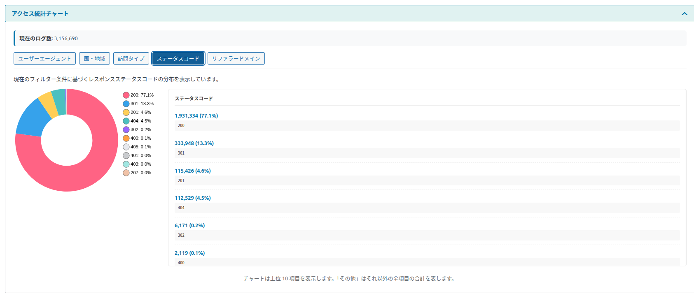
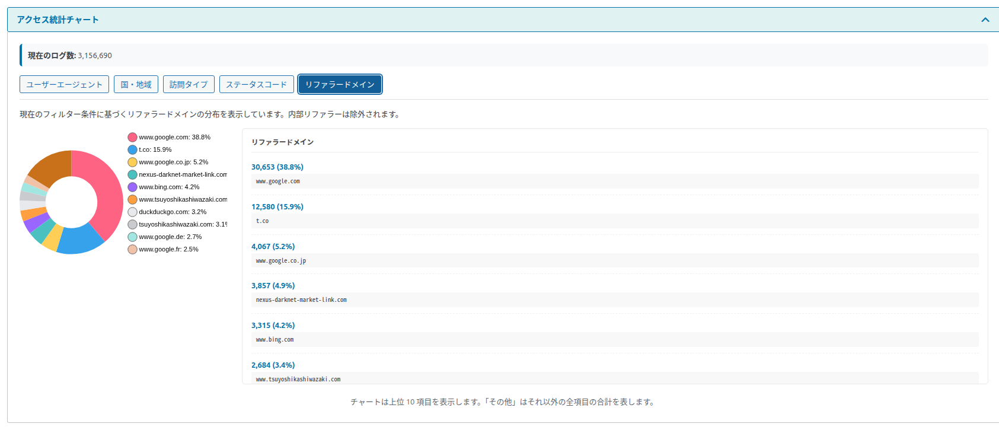

グラフの見方
「アクセストレンドチャート」で日ごとの件数の推移を、「アクセス統計チャート」で 5 つの観点の割合を確かめられます。
2 つのグラフは、見出しを押すと開いたり閉じたりできます。最初は両方とも開いています。どちらも、上の絞り込み条件に合うログで作られます。
アクセストレンドチャート

| 表示 | 意味 |
|---|---|
| 総アクセス数 | 期間内のアクセスの合計です。 |
| トレンド | 期間の前半と後半で、1 日あたりの平均アクセス数を比べた結果です。後半が 10% より多く増えていれば「📈 Increasing」（増加）、10% より多く減っていれば「📉 Decreasing」（減少）、その間なら「➡️ Stable」（安定）と表示し、変化の割合を「(+5.9%)」のように添えます。データが 4 日分より少ないときは、いつも「Stable」です。 |
| 折れ線グラフ | 横軸（Date）が日付、縦軸（Access Count）がその日のアクセス数です。線の上にマウスを乗せると、その日の件数を表示します。 |
| 日付の区切り | 絞り込みの「表示タイムゾーン」の 0 時で 1 日を区切ります。 |
91 日以上を表示すると、グラフが細かくなりすぎないように、約 90 点に間引いて描きます。間引くときは数日を合計するのではなく、一定の間隔で日を選んで描くので、細かい山や谷が省かれることがあります。日ごとの正確な数を見たいときは、期間を 90 日以内にしてください。
期間内にアクセスがないときは「No trend data available for the selected period.」と表示されます。
アクセス統計チャート
5 つのボタンで、何の割合を見るかを切り替えます。押したボタンが青くなります。左がドーナツグラフ、右が件数の多い順の一覧です。
| 表示 | 意味 |
|---|---|
| 現在のログ数 | 絞り込みに関係なく、保存しているログ全体の件数です。 |
| ドーナツグラフ | 上位 10 項目と、それ以外をまとめた「その他」の割合です。凡例の名前は 30 文字を超えると省略されます。 |
| 右の一覧 | 上位 10 項目の「件数 (割合%)」と名前です。値がない項目は「(不明)」と表示されます。 |
ユーザーエージェント

ブラウザやボットの名前ごとの割合です。ボットの名前（Googlebot、bingbot、AhrefsBot など）が上位にあれば、そのボットが多く来ています。記録から外したいボットや、ブロックしたいボットを見つける手がかりになります。
国・地域

国コード（JP、US など）ごとの割合です。国はブラウザの言語設定から推定するので、「住んでいる国」ではなく「使っている言語」に近い数字になります（決まり方は「記録のルール」）。「IPアドレスから国コードを推定」がオフのときは、グラフの下に「📌 お知らせ: 国・地域データを取得するには、設定で「国コード取得を有効化」にチェックを入れてください。」と表示されます。設定画面での実際の項目名は「IPアドレスから国コードを推定」です。
訪問タイプ

新規（new）・リピーター（returning）・ページ遷移（transition）・不明（unknown）の割合です。ページ遷移が多いほど、サイトの中で複数のページを見てもらえています。
ステータスコード

| 番号 | 意味 |
|---|---|
| 200 | 正常に表示できた |
| 301 / 302 | 別の URL へ転送した |
| 403 | アクセスを拒否した |
| 404 | ページが見つからなかった（リンク切れ・存在しない URL・攻撃の試みなど） |
| 500 番台 | サーバー側でエラーが起きた |
リファラードメイン

参照元（そのページに来る前のサイト）のドメインごとの割合です。自分のサイトの中からの移動と、参照元がないアクセスは数えません。検索エンジン・SNS・ほかのサイトのどこから人が来ているかが分かります。
グラフが表示されないとき
| 表示 | 意味と対処 |
|---|---|
| Chart Disabled ／ パフォーマンスのためチャートは無効になっています（現在: N ログ、上限: M）。設定で調整できます。 | ログから直接数えるとき（文字の条件で絞り込んだときなど）に、件数が設定の「チャート表示制限」を超えると、表示を速く保つためにグラフを作りません。期間を短くするか、設定で上限を上げてください。→ チャート表示制限 |
| 📊 現在のフィルター条件ではデータがありません。 | 条件に合うログが 0 件です。条件をゆるめてください。 |
| ❌ Chart.jsのロードに失敗しました。ページをリロードしてください。 | グラフの部品をインターネットから読み込めませんでした。通信の状態を確かめて、ページを読み直してください。 |
| チャートを読み込んでいます... | 読み込み中です。しばらく待つと表示されます。 |
グラフの下の説明文「このチャートは選択した期間の日別アクセス数を表示します。トレンドは期間の前半と後半を比較して算出されます。」「チャートは上位 10 項目を表示します。「その他」はそれ以外の全項目の合計を表します。」は、上の説明と同じ内容です。